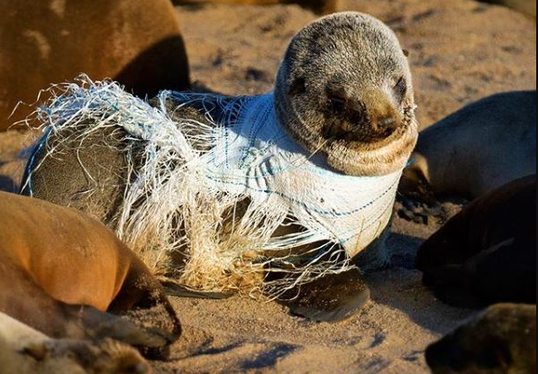
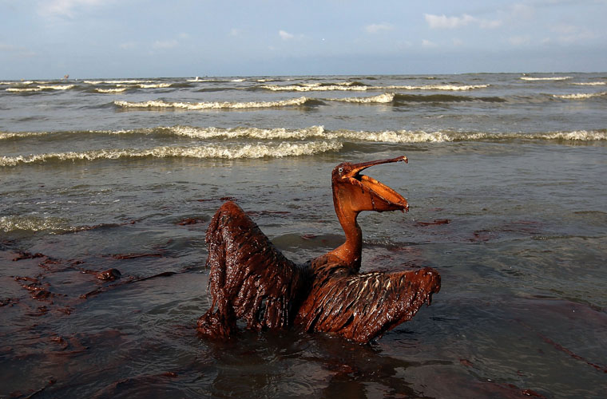
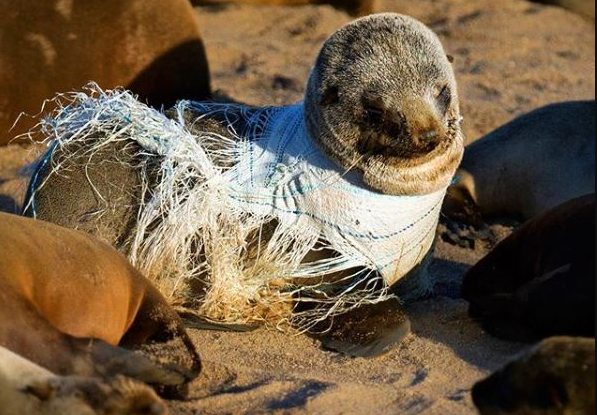
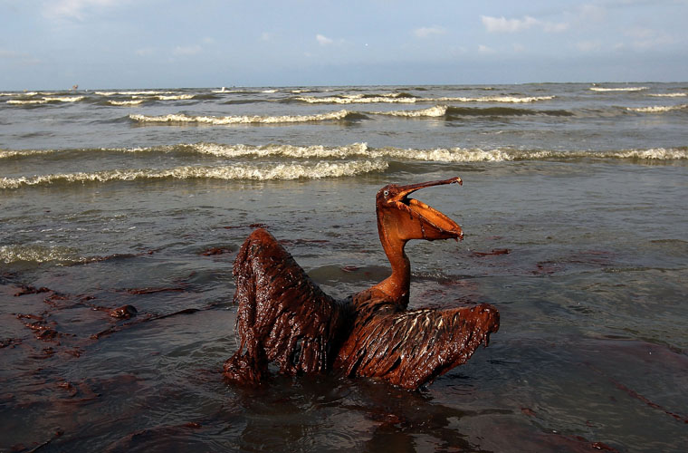

Problemas do Oceano
Os oceanos, fontes vitais de recursos e vida, enfrentam uma série de desafios que ameaçam sua saúde e sustentabilidade. A poluição marinha proveniente de resíduos plásticos, produtos químicos e esgoto, bem como a acidificação causada pelo aumento das emissões de dióxido de carbono, representam ameaças significativas à biodiversidade marinha e aos ecossistemas. Além disso, a pesca excessiva e não sustentável está esgotando os estoques de peixes e afetando negativamente as espécies marinhas. Para garantir um futuro próspero para os oceanos e para nós mesmos, é crucial adotar práticas de conservação e sustentabilidade em todas as atividades relacionadas ao mar.

 


